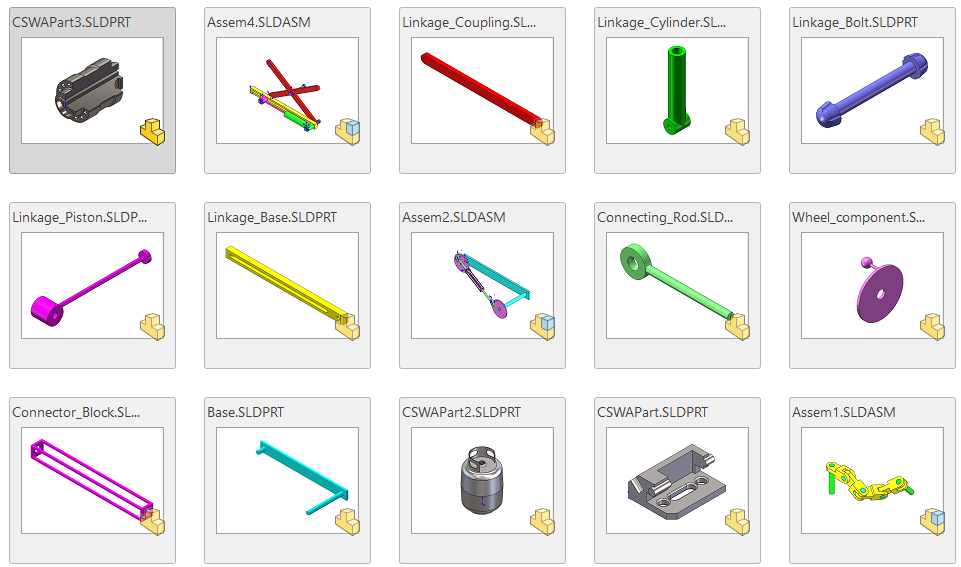

Representative parametric assembly developed during CSWA preparation.
 An array of the components and assemblies I was asked to create in examination demonstrating design intent, feature organization, and constraint control.To reestablish proficiency after a period without access to my university SOLIDWORKS license, I completed structured, self-directed design practice focused on parametric modeling and robust design intent. Emphasis was placed on fully constrained sketches, clean feature trees, and assemblies that rebuild predictably under dimensional changes.
Practice work included mass property evaluation, assembly constraint management, configuration-driven modeling, and time-limited problem solving aligned with certification and industry design workflows.
Preparation is currently underway for the SOLIDWORKS Certified SolidWorks Professional (CSWP) exam, with continued focus on advanced part modeling, multi-body design strategies, and assembly-level problem solving. Completion is targeted for Feb/Mar 2026.